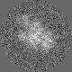
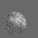
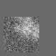

最小
最大
平均値
標準偏差
標準誤差
-65.0178
94.4699
4.85274
20.4635
0.255794
| オプション | 必須項目/選択項目 | 説明 | デフォルト |
|---|---|---|---|
| -i | 必須 | 入力ファイル設定 | NULL |
| -o | 必須 | 出力ファイル設定 | NULL |
| -nx | 選択 | ｘ軸の幅を設定 | 0 |
| -ny | 選択 | ｙ軸の幅を設定 | 0 |
| -nz | 選択 | ｚ軸の幅を設定 | 0 |
| -cx | 選択 | ｘ軸の中心を設定 | 0 |
| -cy | 選択 | ｙ軸の中心を設定 | 0 |
| -cz | 選択 | ｚ軸の中心を設定 | 0 |
| -Shape | 選択 | 形を選択 | 0 |
| -Normalize | 選択 | 0 | |
| -h | 選択 | ヘルプを表示 |
| Shape | 説明 |
|---|---|
| 0 | 円形 |
| 1 | 正方形 |
|
最小 |
-65.0178 |
|  | 最小 |
-65.2676 |
 |
最小 |
-70.9428 |
|  | 最小 |
-66.2815 |
|  | 最小 |
-65.7765 |